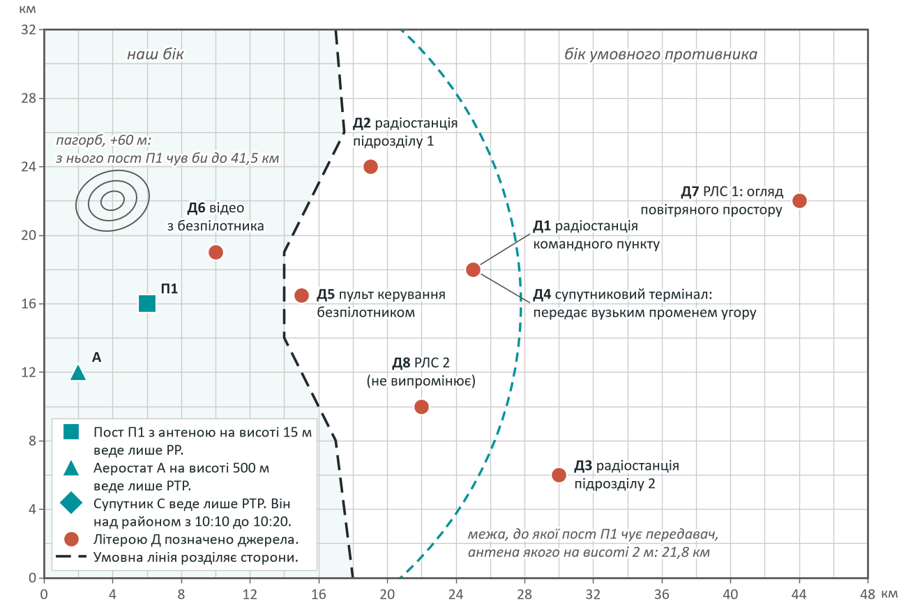

Тема 1. Місце радіоелектронної розвідки в сучасній війні
Тут зібрано все для практичної частини теми: вправа з картою, яку можна виконати просто на цій сторінці, аркуш для друку, відео до завдання 1, блокнот до завдання 3 і відповіді.
Вправа № 1. Хто що бачить
На рис. 1.3 показано вигаданий навчальний район о 09:00, з яким ви працюватимете в усіх восьми темах. Карту складено за планом навчань, тому на ній є всі заплановані джерела умовного противника. Усі вони, крім Д8, зараз випромінюють. Район рівнинний, єдиний пагорб нічого не затуляє, тому далекі сигнали закриває лише опуклість Землі. Вважаємо, що вузький промінь, спрямований угору, збоку не чути. Якщо пост П1 перемістити, межа, до якої він чує, переміститься з ним. Працюйте в парі.

Координати позначок на карті
| Позначка | x, км | y, км |
|---|---|---|
| Пост П1 | 6,0 | 16,0 |
| Аеростат А | 2,0 | 12,0 |
| Вершина пагорба | 4,0 | 22,0 |
| Д1 радіостанція командного пункту | 25,0 | 18,0 |
| Д2 радіостанція підрозділу 1 | 19,0 | 24,0 |
| Д3 радіостанція підрозділу 2 | 30,0 | 6,0 |
| Д4 супутниковий термінал | 25,2 | 18,1 |
| Д5 пульт керування безпілотником | 15,0 | 16,5 |
| Д6 відео з безпілотника | 10,0 | 19,0 |
| Д7 РЛС 1 (огляд повітряного простору) | 44,0 | 22,0 |
| Д8 РЛС 2 (виявлення цілей) | 22,0 | 10,0 |
Джерела Д1 і Д4 стоять поруч, приблизно за 220 м одне від одного, тому на карті підручника в них спільна позначка.
Умовна лінія проходить через точки (17,0; 32,0), (17,5; 26,0), (14,0; 19,0), (14,0; 14,0), (17,0; 8,0), (18,0; 0,0).
- Для кожного джерела від Д1 до Д8 визначте, який напрям його розвідує: РР чи РТР.
- Запишіть, хто приймає сигнал кожного джерела о 09:00: пост П1 чи аеростат А.
- Назвіть джерела, сигналів яких не приймає ніхто. Для кожного поясніть причину.
- Знайдіть два місця, з яких пост П1 приймав би Д3. Що ближче до умовної лінії, то небезпечніше. Яке місце ви оберете і чому?
Кроки 1, 2 і 3. Перевірте себе
Для кожного джерела оберіть напрям, який його розвідує, і того, хто приймає його сигнал о 09:00. Потім натисніть «Перевірити». Кнопка «Показати пояснення» відкриває відповідь і пояснення для кожного джерела.
Крок 4. Перемістіть пост
Клацніть на карті там, де хочете поставити пост П1, або введіть координати цього місця. Сторінка позначить нове місце квадратом із білою серединою і підписом «П1, нове місце», намалює суцільною лінією межу, до якої пост чує звідти, і порахує відстань до Д3 та до умовної лінії. Пунктирна межа лишається від початкового місця поста, точки (6; 16). Щоб поставити пост на вершину пагорба, клацніть на пагорбі або натисніть «На пагорб».
Пост П1 стоїть на своєму місці, як на карті.
Аркуш для друку
Аркуш до вправи № 1 (файл PDF, дві сторінки формату А4). На першій сторінці карта, на другій текст вправи й таблиці для відповідей. У вікні друку встановіть масштаб 100 %, тобто друк без збільшення і зменшення: тоді 1 см на карті відповідає 2 км.
Відео до завдання 1
- «Що таке РЕР?», канал бригади «Хартія» на YouTube, 2 хв 14 с, 29 січня 2026 р. Військовослужбовці підрозділу РЕР бригади розповідають, чим займається їхній підрозділ. Це відео до завдання 1.
- «Khortytsia-M (mobile COMINT complex)», канал компанії «Інфозахист» на YouTube, 2 хв 22 с, 30 червня 2021 р. Додаткове відео: ролик компанії про пересувний комплекс радіорозвідки «Хортиця-М». Назва й опис ролика англійською мовою.
Учителеві: перед уроком перегляньте відео самі. Воно розміщене на сторонньому сайті, тому його можуть змінити чи вилучити.
Блокнот до завдання 3
Блокнот «Радіоелектронна обстановка на цифровій карті» — це файл із готовою програмою мовою Python, яку запускають частинами. Він малює джерела навчального району на карті й показує, як межа, до якої чує пост П1, залежить від висоти його антени.
Як відкрити блокнот. Збережіть файл на комп’ютері. Відкрийте сайт Google Colab і ввійдіть в обліковий запис Google. У меню «Файл» оберіть команду, яка завантажує блокнот із комп’ютера (англійською вона називається Upload notebook), і вкажіть збережений файл.
Якщо ви вже програмуєте мовою Python, блокнот можна відкрити й без Colab: у програмі Jupyter, з установленою бібліотекою matplotlib.
Відповіді
Відповіді до вправи, контрольних запитань і завдань теми. Спершу виконайте вправу самі.
Посилання на публікації, названі в темі
- Preliminary Lessons in Conventional Warfighting from Russia’s Invasion of Ukraine: February–July 2022. Звіт британського інституту RUSI від 30 листопада 2022 р., англійською мовою. Про прослуховування радіопереговорів ідеться на с. 31–32.
- D-Day and the RAF. Текст подкасту Музею Королівських повітряних сил Великої Британії, англійською мовою. Розповідає, як перед висадкою в Нормандії знищували й обманювали німецькі радари.
- FlightAware: ADS-B. Сторінка сервісу, що показує літаки в небі, англійською мовою. Пояснює, як літаки повідомляють свої координати і як приймачі на землі збирають їх на спільну карту.
- Ukrainian developers present AI solutions for state security purposes. Новина агентства УНН від 6 травня 2024 р., англійською мовою, з посиланням на Міністерство цифрової трансформації України. Про платформу HARVESTER.
- Сайт компанії «Інфозахист». Сторінка про компанію, українського розробника засобів РЕР, українською мовою.